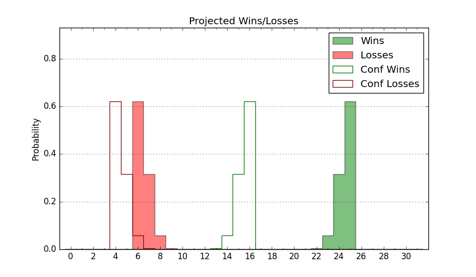

| Home | Game Probabilities | Conferences | Preseason Predictions | Odds Charts | NCAA Tournament |
| City: | Tucson, Arizona | |
| Conference: | Pac 12 (1st)
| |
| Record: | 12-4 (Conf) 21-6 (Overall) | |
| Ratings: | Comp.: 32.9 (3rd) Net: 32.9 (3rd) Off: 123.7 (5th) Def: 90.8 (6th) SoR: 91.4 (9th) |
| Remaining | ||||||
|---|---|---|---|---|---|---|
| Date | Opponent | Win Prob | Pred. | |||
| 2/28 | @ Arizona St. (127) | 89.7% | W 86-69 | |||
| 3/2 | Oregon (65) | 92.3% | W 89-71 | |||
| 3/7 | @ UCLA (110) | 87.5% | W 78-64 | |||
| 3/9 | @ USC (92) | 84.5% | W 87-74 | |||
| Previous | Game Score | |||||
| Date | Opponent | Win Prob | Result | Off | Def | Net |
| 11/6 | Morgan St. (346) | 99.7% | W 122-59 | 21.1 | 5.4 | 26.5 |
| 11/10 | @Duke (13) | 52.5% | W 78-73 | -11.8 | 15.2 | 3.4 |
| 11/13 | Southern (242) | 98.9% | W 97-59 | -7.7 | 6.5 | -1.2 |
| 11/17 | Belmont (129) | 96.8% | W 100-68 | 1.4 | 5.8 | 7.1 |
| 11/19 | UT Arlington (163) | 97.9% | W 101-56 | -0.5 | 16.4 | 15.9 |
| 11/23 | (N) Michigan St. (20) | 74.3% | W 74-68 | -3.4 | 3.3 | -0.1 |
| 12/2 | Colgate (135) | 97.2% | W 82-55 | -15.6 | 11.4 | -4.2 |
| 12/9 | Wisconsin (21) | 84.5% | W 98-73 | 11.6 | 6.2 | 17.8 |
| 12/16 | (N) Purdue (2) | 46.6% | L 84-92 | -3.2 | -8.5 | -11.7 |
| 12/20 | (N) Alabama (5) | 58.0% | W 87-74 | -10.6 | 22.4 | 11.8 |
| 12/23 | (N) Florida Atlantic (40) | 81.3% | L 95-96 | -9.7 | -1.1 | -10.7 |
| 12/29 | @California (109) | 87.4% | W 100-81 | 3.8 | 3.3 | 7.2 |
| 12/31 | @Stanford (102) | 86.8% | L 82-100 | -11.1 | -34.0 | -45.1 |
| 1/4 | Colorado (27) | 87.0% | W 97-50 | 13.9 | 30.8 | 44.7 |
| 1/6 | Utah (52) | 91.2% | W 92-73 | 1.2 | 1.3 | 2.5 |
| 1/13 | @Washington St. (31) | 68.1% | L 70-73 | -9.8 | -5.3 | -15.1 |
| 1/17 | USC (92) | 94.9% | W 82-67 | -16.0 | 2.9 | -13.1 |
| 1/20 | UCLA (110) | 96.0% | W 77-71 | 2.0 | -20.7 | -18.7 |
| 1/25 | @Oregon St. (151) | 92.6% | L 80-83 | -1.2 | -32.7 | -33.9 |
| 1/27 | @Oregon (65) | 77.9% | W 87-78 | 11.6 | -8.6 | 3.0 |
| 2/1 | California (109) | 95.9% | W 91-65 | -5.1 | 10.2 | 5.1 |
| 2/4 | Stanford (102) | 95.7% | W 82-71 | -7.1 | -9.1 | -16.2 |
| 2/8 | @Utah (52) | 75.4% | W 105-99 | 4.2 | -3.8 | 0.4 |
| 2/10 | @Colorado (27) | 66.2% | W 99-79 | 16.0 | 2.3 | 18.3 |
| 2/17 | Arizona St. (127) | 96.7% | W 105-60 | 25.9 | 3.0 | 28.8 |
| 2/22 | Washington St. (31) | 87.9% | L 74-77 | -11.2 | -12.1 | -23.3 |
| 2/24 | Washington (70) | 93.2% | W 91-75 | -6.8 | 3.4 | -3.4 |
| Stats & Trends | |||||
|---|---|---|---|---|---|
| Current | Day | Week | Month | Season | |
| Composite | 32.9 | -0.0 | -1.1 | +1.0 | +10.5 |
| Comp Rank | 3 | -- | -1 | -- | +12 |
| Net Efficiency | 32.9 | -0.0 | -1.2 | +0.6 | -- |
| Net Rank | 3 | -- | -1 | -- | -- |
| Off Efficiency | 123.7 | -0.0 | -0.9 | +1.3 | -- |
| Off Rank | 5 | -- | -- | +1 | -- |
| Def Efficiency | 90.8 | -0.0 | -0.3 | -0.7 | -- |
| Def Rank | 6 | -- | -- | +1 | -- |
| SoS Rank | 15 | +2 | +1 | -12 | -- |
| Exp. Wins | 24.6 | +0.0 | -0.9 | +0.1 | +3.4 |
| Exp. Conf Wins | 15.6 | +0.0 | -0.9 | +0.1 | +1.9 |
| Conf Champ Prob | 96.3 | +0.2 | -1.3 | +5.1 | +66.2 |

| Advanced Stats | ||
|---|---|---|
| Stat | Value | Rank |
| Off Eff FG % | 0.575 | 15 |
| Off Ast Ratio | 0.194 | 9 |
| Off ORB% | 0.414 | 3 |
| Off TO Rate | 0.131 | 69 |
| Off FT Ratio | 0.405 | 23 |
| Def Eff FG % | 0.453 | 27 |
| Def Ast Ratio | 0.127 | 71 |
| Def ORB% | 0.196 | 2 |
| Def TO Rate | 0.168 | 51 |
| Def FT Ratio | 0.248 | 15 |